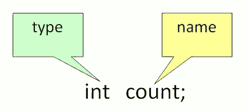
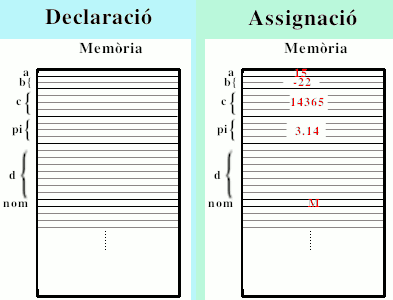
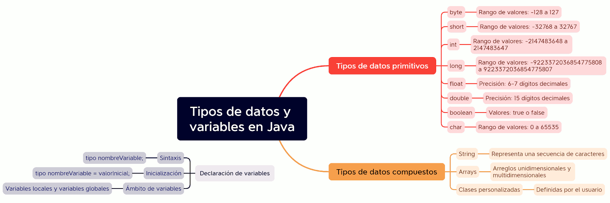

Variables
Una Variable és un contenidor de dades que emmagatzema els valors de les dades durant l'execució del programa Java. El valor d'una variable pot canviar durant l'execució del programa. Quan es necessite el valor d'una variable n'hi ha prou amb posar el nom de la variable en una expressió. A cada variable se li assigna un tipus de dades que designa el tipus i la quantitat de valor que pot contindre. La variable és un nom d'ubicació de memòria de les dades. Les variables Java tenen principalment tres tipus: Local, Instància i Estàtica.
Per a utilitzar una variable en un programa és necessari realitzar 2 passos
-
Declaració de variable
Una variable ha de ser declarada abans de poder-la usar i només pot declarar-se una única vegada. Per a declarar una variable, ha d'especificar el tipus de dades i donar-li a la variable un nom únic.
Exemples de declaracions vàlides són:
byte a;
short b;
int c;
float pi;
double d;
char nom;
boolean isnumero, islletra, isdigit; // declaració múltiple
Una vegada que es declara un tipus de dades per a una variable, el compilador monitorarà el seu ús d'eixe element de dades. Si intenta realitzar operacions que no estan permeses per a eixe tipus o que no són compatibles amb eixe tipus, el compilador generarà un error. Pel fet que el compilador de Java monitora les operacions en cada element de dades, a Java se'n diu llenguatge fortament tipat.
-
Inicializació d'una variable
 Per a inicialitzar una variable, ha d'assignar-li un valor vàlid. Exemples d'inicialitzacions vàlides són:
Per a inicialitzar una variable, ha d'assignar-li un valor vàlid. Exemples d'inicialitzacions vàlides són:
a = 15;
b = -22;
c = 14365;
pi = 3.14;
nom = "M";
Es pot combinar declaració i inicialització de variables. Exemple:
byte a = 2, b = 4, c = 6;
float pi = 3.14f;
char a= ’M’;

-
-
Tipus de variables
-
- Variables locals: es declaren dins d'un mètode o bloc i només són accessibles dins d'eixe mètode o bloc.
public class VariableTest {
public static void main(String[] args) {
int myInt = - 5; // entero
float myFloat = 2.718281828459045f; // real - punto flotante
char myLetter = 'a'; // caracter
boolean myBool; // boolean
String myText = "Hero"; // String
System.out.println(myInt + " " +
myFloat +" " + myLetter + " " + myBool + " " + myText);
Student myStudent = new Student("Walker","Johnny", "Kyle", null);
}
}-
- Variables d'instància (variables de classe): Es defineixen fora d'una declaració de mètode però dins d'una classe. Són específiques de l'objecte, és a dir, es creen quan es crea un objecte i són pròpies d'eixe objecte. Cada objecte tindrà les seues pròpies variables d'instància (atributs). Es declaren amb la paraula reservada static.
class Guru99 {
static int a = 1; //static variable
int data = 99; //instance variable
void method() {
int b = 90; //local variable
}
}- Variables estàtiques: s'inicialitzen només una vegada, a l'inici de l'execució del programa. Aquestes variables han d'inicialitzar-se primer, abans de la inicialització de qualsevol variable d'instància. Es defineixen igual que les variables d'instància però el seu valor és comú per a totes les instàncies d'una classe.
-
-
A continuació es mostra un programa complet amb declaració de variables i assignació d'un literal com a valor inicial a cada variable.
/* Variables Class. Anderson, Franceschi */
public class Variables
{
public static void main( String [ ] args )
{ // This example shows how to declare and initialize variables
int testGrade = 100;
long cityPopulation = 425612340L;
byte ageInYears = 19;
float salesTax = .05F;
double interestRate = 0.725;
double avogadroNumber = +6.022E23;
// avogadroNumber està representat amb notació científica
// el seu valor és 6.022 x 10 elevat a 23
char finalGrade = ‘A’;
boolean isEmpty = true;
System.out.println( “testGrade is “ + testGrade );
System.out.println( “cityPopulation is “ + cityPopulation );
System.out.println( “ageInYears is “ + ageInYears );
System.out.println( “salesTax is “ + salesTax );
System.out.println( “interestRate is “ + interestRate );
System.out.println( “avogadroNumber is “ + avogadroNumber );
System.out.println( “finalGrade is “ + finalGrade );
System.out.println( “isEmpty is “ + isEmpty );
}
}

Convencions de nomenclatura
A l'hora de donar nom als identificadors i d'escriure el codi font d'un programa, es pot seguir el mètode que es desitge, encara que s'aconsella utilitzar un dels sistemes existents. La comunitat Java, sol utilitzar el mètode conegut com "Camel case". Si tots els programadors utilitzen les mateixes normes, la lectura del programa resulta més fàcil.
- Els noms de les variables han de ser substantius i començar amb una lletra minúscula. Si el nom consta de diverses paraules, s'utilitza l'estil Camel Case, en el qual la primera lletra de cada paraula després de la primera s'escriu en majúscula, sense espais ni guions baixos. (dataNaixement; nomDeUsuari).
- Els noms de classe e interficie han de ser sustantiuos, començant amb una lletra minúscula (UpperCamelCase).
- Els noms dels mètodes han de ser verbs, començant amb una lletra minúscula (Camel case).
- No utilitzar noms d'una sola lletra per a nomenar una variable llevat que aquestes variables siguen utilitzades en un comptador d'un bucle:
int i;
for (i = 0; i < 10; i++) - Es recomana nomenar les variables booleanes o lògiques (true o false) anteposant al seu nom el prefix "is": iscasat, iscorrecte, etc
- Els noms de les constants s'escriuen en majúscules i se separen amb guions baixos (SCREAMING_SNAKE_CASE). Exemple: LA_MEUA_CONSTANT, VALOR_MAXIM
- Si una variable és membre d'una classe o una instància, és freqüent utilitzar el prefix this per a distingir-lo. Exemple: this.miVariable, this.nombDeUsuari.
- Si una variable és una constant i estàtica, és freqüent utilitzar el prefix final per a indicar-lo. Exemple: static final int LA_MEUA_CONSTANT = 10.
És important tindre en compte que aquestes són convencions suggerides i no regles estrictes. La consistència i la llegibilitat són fonamentals, així que assegura't de seguir un estil de nomenclatura coherent en tot el teu codi.
Important:
- Una variable ha de ser declarada e instanciada (cal assignar-li un valor) abans de de poder ser utilitzada en una línia de codi.
- Només es declara una vegada (en el seu àmbit).
- Un cop declarada no és possible canviar-li el tipus.